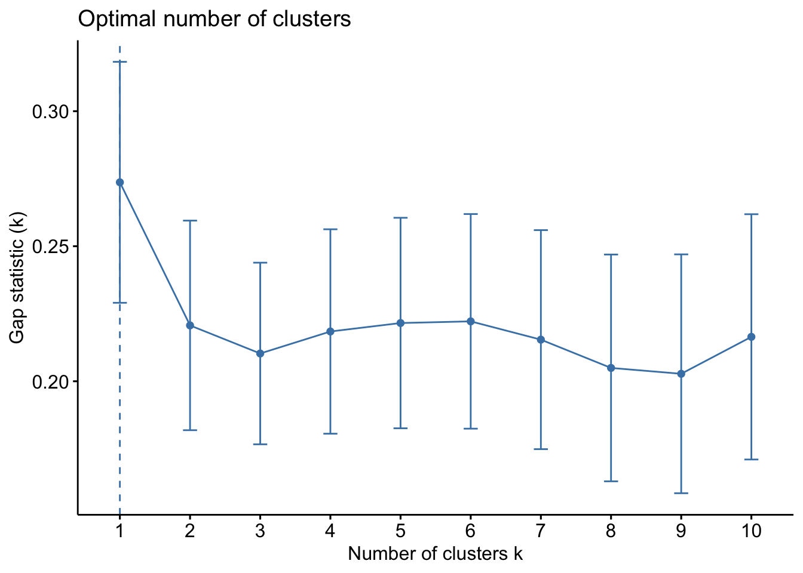

pacman::p_load(spdep, tmap, sf, ClustGeo,
ggpubr, cluster, factoextra, NbClust,
heatmaply, corrplot, psych, tidyverse, GGally)Hands-on Ex 6
Geographical Segmentation with Spatially Constrained Clustering Techniques
1. Overview
In geobusiness and spatial policy, a key practice is the segmentation of markets or planning areas into homogeneous regions using multivariate data. This segmentation allows for more targeted planning, resource allocation, and policy-making. This exercise focuses on delineating homogeneous regions using geographically referenced multivariate data, employing two primary analytical techniques:
- Hierarchical cluster analysis
- Spatially constrained cluster analysis
In this hands-on exercise, we will apply these techniques to segment Shan State, Myanmar, into homogeneous regions based on various Information and Communication Technology (ICT) measures. These measures include the availability of radio, television, landline phones, mobile phones, computers, and internet access at home. By understanding the spatial distribution of these ICT indicators, we can gain insights into the region’s digital landscape and inform policy decisions.
A few new R packages required for geographical segmentation and analysis include:
rgdalfor spatial data handlingcoorplot,ggpubr,heatmaply,psych,GGally: These packages are used for multivariate data visualisationcluster,ClustGeo,factoextra,NbClust: These packages facilitate cluster analysis.
2. Importing & Transforming Data
Two datasets will be used in this hands-on exercise:
- Myanmar Township Boundary Data: A geospatial dataset in ESRI shapefile format that outlines the township boundaries of Myanmar
- 2014 Myanmar Population and Housing Census: A CSV file containing township-level information from the 2014 census.
shan_sf <- st_read(dsn = "data/geospatial",
layer = "myanmar_township_boundaries") %>%
filter(ST %in% c("Shan (East)", "Shan (North)", "Shan (South)")) %>%
select(c(2:7))Reading layer `myanmar_township_boundaries' from data source
`/Users/stephentay/stephentay/ISSS626-Geospatial-Analytics/Hands-on_Ex/Hands-on_Ex06/data/geospatial'
using driver `ESRI Shapefile'
Simple feature collection with 330 features and 14 fields
Geometry type: MULTIPOLYGON
Dimension: XY
Bounding box: xmin: 92.17275 ymin: 9.671252 xmax: 101.1699 ymax: 28.54554
Geodetic CRS: WGS 84shan_sfSimple feature collection with 55 features and 6 fields
Geometry type: MULTIPOLYGON
Dimension: XY
Bounding box: xmin: 96.15107 ymin: 19.29932 xmax: 101.1699 ymax: 24.15907
Geodetic CRS: WGS 84
First 10 features:
ST ST_PCODE DT DT_PCODE TS TS_PCODE
1 Shan (North) MMR015 Mongmit MMR015D008 Mongmit MMR015017
2 Shan (South) MMR014 Taunggyi MMR014D001 Pindaya MMR014006
3 Shan (South) MMR014 Taunggyi MMR014D001 Ywangan MMR014007
4 Shan (South) MMR014 Taunggyi MMR014D001 Pinlaung MMR014009
5 Shan (North) MMR015 Mongmit MMR015D008 Mabein MMR015018
6 Shan (South) MMR014 Taunggyi MMR014D001 Kalaw MMR014005
7 Shan (South) MMR014 Taunggyi MMR014D001 Pekon MMR014010
8 Shan (South) MMR014 Taunggyi MMR014D001 Lawksawk MMR014008
9 Shan (North) MMR015 Kyaukme MMR015D003 Nawnghkio MMR015013
10 Shan (North) MMR015 Kyaukme MMR015D003 Kyaukme MMR015012
geometry
1 MULTIPOLYGON (((96.96001 23...
2 MULTIPOLYGON (((96.7731 21....
3 MULTIPOLYGON (((96.78483 21...
4 MULTIPOLYGON (((96.49518 20...
5 MULTIPOLYGON (((96.66306 24...
6 MULTIPOLYGON (((96.49518 20...
7 MULTIPOLYGON (((97.14738 19...
8 MULTIPOLYGON (((96.94981 22...
9 MULTIPOLYGON (((96.75648 22...
10 MULTIPOLYGON (((96.95498 22...glimpse(shan_sf)Rows: 55
Columns: 7
$ ST <chr> "Shan (North)", "Shan (South)", "Shan (South)", "Shan (South)…
$ ST_PCODE <chr> "MMR015", "MMR014", "MMR014", "MMR014", "MMR015", "MMR014", "…
$ DT <chr> "Mongmit", "Taunggyi", "Taunggyi", "Taunggyi", "Mongmit", "Ta…
$ DT_PCODE <chr> "MMR015D008", "MMR014D001", "MMR014D001", "MMR014D001", "MMR0…
$ TS <chr> "Mongmit", "Pindaya", "Ywangan", "Pinlaung", "Mabein", "Kalaw…
$ TS_PCODE <chr> "MMR015017", "MMR014006", "MMR014007", "MMR014009", "MMR01501…
$ geometry <MULTIPOLYGON [°]> MULTIPOLYGON (((96.96001 23..., MULTIPOLYGON (((…There are a total of 11 columns and 55 observations.
ict <- read_csv("data/aspatial/Shan-ICT.csv")Rows: 55 Columns: 11
── Column specification ────────────────────────────────────────────────────────
Delimiter: ","
chr (4): District Pcode, District Name, Township Pcode, Township Name
dbl (7): Total households, Radio, Television, Land line phone, Mobile phone,...
ℹ Use `spec()` to retrieve the full column specification for this data.
ℹ Specify the column types or set `show_col_types = FALSE` to quiet this message.summary(ict) District Pcode District Name Township Pcode Township Name
Length:55 Length:55 Length:55 Length:55
Class :character Class :character Class :character Class :character
Mode :character Mode :character Mode :character Mode :character
Total households Radio Television Land line phone
Min. : 3318 Min. : 115 Min. : 728 Min. : 20.0
1st Qu.: 8711 1st Qu.: 1260 1st Qu.: 3744 1st Qu.: 266.5
Median :13685 Median : 2497 Median : 6117 Median : 695.0
Mean :18369 Mean : 4487 Mean :10183 Mean : 929.9
3rd Qu.:23471 3rd Qu.: 6192 3rd Qu.:13906 3rd Qu.:1082.5
Max. :82604 Max. :30176 Max. :62388 Max. :6736.0
Mobile phone Computer Internet at home
Min. : 150 Min. : 20.0 Min. : 8.0
1st Qu.: 2037 1st Qu.: 121.0 1st Qu.: 88.0
Median : 3559 Median : 244.0 Median : 316.0
Mean : 6470 Mean : 575.5 Mean : 760.2
3rd Qu.: 7177 3rd Qu.: 507.0 3rd Qu.: 630.5
Max. :48461 Max. :6705.0 Max. :9746.0 The values are measured as the number of households. Using these numbers directly can introduce bias, as townships with more households are likely to have higher counts for owning radios, TVs, etc. To address this, we calculate the penetration rate for six ICT variables:
- RADIO_PR: Radio Penetration Rate
- TV_PR: TV Penetration Rate
- LLPHONE_PR: Landline Phone Penetration Rate
- MPHONE_PR: Mobile Phone Penetration Rate
- COMPUTER_PR: Computer Penetration Rate
- INTERNET_PR: Home Internet Penetration Rate
ict_derived <- ict %>%
mutate(`RADIO_PR` = `Radio`/`Total households`*1000) %>%
mutate(`TV_PR` = `Television`/`Total households`*1000) %>%
mutate(`LLPHONE_PR` = `Land line phone`/`Total households`*1000) %>%
mutate(`MPHONE_PR` = `Mobile phone`/`Total households`*1000) %>%
mutate(`COMPUTER_PR` = `Computer`/`Total households`*1000) %>%
mutate(`INTERNET_PR` = `Internet at home`/`Total households`*1000) %>%
rename(`DT_PCODE` =`District Pcode`,`DT`=`District Name`,
`TS_PCODE`=`Township Pcode`, `TS`=`Township Name`,
`TT_HOUSEHOLDS`=`Total households`,
`RADIO`=`Radio`, `TV`=`Television`,
`LLPHONE`=`Land line phone`, `MPHONE`=`Mobile phone`,
`COMPUTER`=`Computer`, `INTERNET`=`Internet at home`)
summary(ict_derived) DT_PCODE DT TS_PCODE TS
Length:55 Length:55 Length:55 Length:55
Class :character Class :character Class :character Class :character
Mode :character Mode :character Mode :character Mode :character
TT_HOUSEHOLDS RADIO TV LLPHONE
Min. : 3318 Min. : 115 Min. : 728 Min. : 20.0
1st Qu.: 8711 1st Qu.: 1260 1st Qu.: 3744 1st Qu.: 266.5
Median :13685 Median : 2497 Median : 6117 Median : 695.0
Mean :18369 Mean : 4487 Mean :10183 Mean : 929.9
3rd Qu.:23471 3rd Qu.: 6192 3rd Qu.:13906 3rd Qu.:1082.5
Max. :82604 Max. :30176 Max. :62388 Max. :6736.0
MPHONE COMPUTER INTERNET RADIO_PR
Min. : 150 Min. : 20.0 Min. : 8.0 Min. : 21.05
1st Qu.: 2037 1st Qu.: 121.0 1st Qu.: 88.0 1st Qu.:138.95
Median : 3559 Median : 244.0 Median : 316.0 Median :210.95
Mean : 6470 Mean : 575.5 Mean : 760.2 Mean :215.68
3rd Qu.: 7177 3rd Qu.: 507.0 3rd Qu.: 630.5 3rd Qu.:268.07
Max. :48461 Max. :6705.0 Max. :9746.0 Max. :484.52
TV_PR LLPHONE_PR MPHONE_PR COMPUTER_PR
Min. :116.0 Min. : 2.78 Min. : 36.42 Min. : 3.278
1st Qu.:450.2 1st Qu.: 22.84 1st Qu.:190.14 1st Qu.:11.832
Median :517.2 Median : 37.59 Median :305.27 Median :18.970
Mean :509.5 Mean : 51.09 Mean :314.05 Mean :24.393
3rd Qu.:606.4 3rd Qu.: 69.72 3rd Qu.:428.43 3rd Qu.:29.897
Max. :842.5 Max. :181.49 Max. :735.43 Max. :92.402
INTERNET_PR
Min. : 1.041
1st Qu.: 8.617
Median : 22.829
Mean : 30.644
3rd Qu.: 41.281
Max. :117.985 3. Exploratory Data Analysis
3.1 EDA using statistical graphics
We will be plotting the distribution of the variables.
The top plot is a histogram of households with radios, illustrating the overall shape and distribution of the data (e.g., normal distribution, left or right skew). The bottom plot is a boxplot for the same data, highlighting potential outliers.
ggplot(data=ict_derived,
aes(x=`RADIO`)) +
geom_histogram(bins=20,
color="black",
fill="light blue")
ggplot(data=ict_derived,
aes(x=`RADIO`)) +
geom_boxplot(color="black",
fill="light blue")
Now, we will plot the radio penetration rate. The distribution of the penetration rate is less skewed and has fewer outliers compared to the number of households with radios. This is expected, as larger townships tend to have more households, leading to more extreme values.
ggplot(data=ict_derived,
aes(x=`RADIO_PR`)) +
geom_histogram(bins=20,
color="black",
fill="light blue")
ggplot(data=ict_derived,
aes(x=`RADIO_PR`)) +
geom_boxplot(color="black",
fill="light blue")
The chart below displays histograms for each of the six ICT penetration rates.
Code
radio <- ggplot(data=ict_derived,
aes(x= `RADIO_PR`)) +
geom_histogram(bins=20,
color="black",
fill="light blue")
tv <- ggplot(data=ict_derived,
aes(x= `TV_PR`)) +
geom_histogram(bins=20,
color="black",
fill="light blue")
llphone <- ggplot(data=ict_derived,
aes(x= `LLPHONE_PR`)) +
geom_histogram(bins=20,
color="black",
fill="light blue")
mphone <- ggplot(data=ict_derived,
aes(x= `MPHONE_PR`)) +
geom_histogram(bins=20,
color="black",
fill="light blue")
computer <- ggplot(data=ict_derived,
aes(x= `COMPUTER_PR`)) +
geom_histogram(bins=20,
color="black",
fill="light blue")
internet <- ggplot(data=ict_derived,
aes(x= `INTERNET_PR`)) +
geom_histogram(bins=20,
color="black",
fill="light blue")
ggarrange(radio, tv, llphone, mphone, computer, internet,
ncol = 3,
nrow = 2)The chart below displays boxplots for each of the six ICT penetration rates.
Code
radio_boxplot <- ggplot(data=ict_derived,
aes(x= `RADIO_PR`)) +
geom_boxplot(color="black", fill="light blue")
tv_boxplot <- ggplot(data=ict_derived,
aes(x= `TV_PR`)) +
geom_boxplot(color="black", fill="light blue")
llphone_boxplot <- ggplot(data=ict_derived,
aes(x= `LLPHONE_PR`)) +
geom_boxplot(color="black", fill="light blue")
mphone_boxplot <- ggplot(data=ict_derived,
aes(x= `MPHONE_PR`)) +
geom_boxplot(color="black", fill="light blue")
computer_boxplot <- ggplot(data=ict_derived,
aes(x= `COMPUTER_PR`)) +
geom_boxplot(color="black", fill="light blue")
internet_boxplot <- ggplot(data=ict_derived,
aes(x= `INTERNET_PR`)) +
geom_boxplot(color="black", fill="light blue")
ggarrange(radio_boxplot, tv_boxplot, llphone_boxplot,
mphone_boxplot, computer_boxplot, internet_boxplot,
ncol = 3,
nrow = 2)3.2 EDA using choropleth map
Before plotting the choropleth map, we need to join the ICT variables from the aspatial dataset to the Myanmar Township geospatial dataset. The ict_derived dataset is left-joined with the shan_sf dataset using the TS_PCODE key. We use qtm() to have a quick look at the distribution of Radio penetration rate.
shan_sf <- left_join(shan_sf,
ict_derived, by=c("TS_PCODE"="TS_PCODE"))
qtm(shan_sf, "RADIO_PR")The plot below shows the choropleth map of the total number of households in each town (left) and the number of households with radios (right). Towns with larger number of households are also showing higher number of radio ownership.
TT_HOUSEHOLDS.map <- tm_shape(shan_sf) +
tm_fill(col = "TT_HOUSEHOLDS",
n = 5,
style = "jenks",
title = "Total households") +
tm_borders(alpha = 0.5)
RADIO.map <- tm_shape(shan_sf) +
tm_fill(col = "RADIO",
n = 5,
style = "jenks",
title = "Households w/ Radio") +
tm_borders(alpha = 0.5)
tmap_arrange(TT_HOUSEHOLDS.map, RADIO.map,
asp=NA, ncol=2)The plots below display a choropleth map of the total number of households in each township (left) and the radio penetration rate (right). We observe that higher penetration rates are found in areas with fewer households.
tm_shape(shan_sf) +
tm_polygons(c("TT_HOUSEHOLDS", "RADIO_PR"),
style="jenks") +
tm_facets(sync = TRUE, ncol = 2) +
tm_legend(legend.position = c("right", "bottom"))+
tm_layout(outer.margins=0, asp=0)Below is the choropleth maps for Total Households, Households with TVs, and TV Penetration Rate.
Code
TV.map <- tm_shape(shan_sf) +
tm_fill(col = "TV",
n = 5,
style = "jenks",
title = "Households w/ TV") +
tm_borders(alpha = 0.5)
TV_PR.map <- tm_shape(shan_sf) +
tm_fill(col = "TV_PR",
n = 5,
style = "jenks",
title = "TV Penetration Rate") +
tm_borders(alpha = 0.5)
tmap_arrange(TT_HOUSEHOLDS.map, TV.map, TV_PR.map,
asp=NA, ncol=3)Legend labels were too wide. The labels have been resized to 0.51, 0.47, 0.47, 0.47, 0.47. Increase legend.width (argument of tm_layout) to make the legend wider and therefore the labels larger.Legend labels were too wide. The labels have been resized to 0.63, 0.51, 0.47, 0.47, 0.47. Increase legend.width (argument of tm_layout) to make the legend wider and therefore the labels larger.Legend labels were too wide. The labels have been resized to 0.55, 0.55, 0.55, 0.55, 0.55. Increase legend.width (argument of tm_layout) to make the legend wider and therefore the labels larger.Below is the choropleth maps for Total Households, Households with Landline Phones, and Landline Phone Penetration Rate.
Code
LLPHONE.map <- tm_shape(shan_sf) +
tm_fill(col = "LLPHONE",
n = 5,
style = "jenks",
title = "Households w/ Landline") +
tm_borders(alpha = 0.5)
LLPHONE_PR.map <- tm_shape(shan_sf) +
tm_fill(col = "LLPHONE_PR",
n = 5,
style = "jenks",
title = "Landline Penetration Rate") +
tm_borders(alpha = 0.5)
tmap_arrange(TT_HOUSEHOLDS.map, LLPHONE.map, LLPHONE_PR.map,
asp=NA, ncol=3)Legend labels were too wide. The labels have been resized to 0.51, 0.47, 0.47, 0.47, 0.47. Increase legend.width (argument of tm_layout) to make the legend wider and therefore the labels larger.Some legend labels were too wide. These labels have been resized to 0.63, 0.55, 0.55, 0.55. Increase legend.width (argument of tm_layout) to make the legend wider and therefore the labels larger.Some legend labels were too wide. These labels have been resized to 0.66, 0.66, 0.60, 0.55. Increase legend.width (argument of tm_layout) to make the legend wider and therefore the labels larger.Below is the choropleth maps for Total Households, Households with Mobile Phones, and Mobile Phone Penetration Rate.
Code
MPHONE.map <- tm_shape(shan_sf) +
tm_fill(col = "MPHONE",
n = 5,
style = "jenks",
title = "Households w/ Mobile") +
tm_borders(alpha = 0.5)
MPHONE_PR.map <- tm_shape(shan_sf) +
tm_fill(col = "MPHONE_PR",
n = 5,
style = "jenks",
title = "Mobile Penetration Rate") +
tm_borders(alpha = 0.5)
tmap_arrange(TT_HOUSEHOLDS.map, MPHONE.map, MPHONE_PR.map,
asp=NA, ncol=3)Legend labels were too wide. The labels have been resized to 0.51, 0.47, 0.47, 0.47, 0.47. Increase legend.width (argument of tm_layout) to make the legend wider and therefore the labels larger.Legend labels were too wide. The labels have been resized to 0.63, 0.55, 0.51, 0.47, 0.47. Increase legend.width (argument of tm_layout) to make the legend wider and therefore the labels larger.Legend labels were too wide. The labels have been resized to 0.60, 0.55, 0.55, 0.55, 0.55. Increase legend.width (argument of tm_layout) to make the legend wider and therefore the labels larger.Below is the choropleth maps for Total Households, Households with Computers, and Computer Penetration Rate.
Code
COMPUTER.map <- tm_shape(shan_sf) +
tm_fill(col = "COMPUTER",
n = 5,
style = "jenks",
title = "Households w/ Computer") +
tm_borders(alpha = 0.5)
COMPUTER_PR.map <- tm_shape(shan_sf) +
tm_fill(col = "COMPUTER_PR",
n = 5,
style = "jenks",
title = "Computer Penetration Rate") +
tm_borders(alpha = 0.5)
tmap_arrange(TT_HOUSEHOLDS.map, COMPUTER.map, COMPUTER_PR.map,
asp=NA, ncol=3)Legend labels were too wide. The labels have been resized to 0.51, 0.47, 0.47, 0.47, 0.47. Increase legend.width (argument of tm_layout) to make the legend wider and therefore the labels larger.Some legend labels were too wide. These labels have been resized to 0.63, 0.55, 0.55. Increase legend.width (argument of tm_layout) to make the legend wider and therefore the labels larger.Legend labels were too wide. The labels have been resized to 0.60, 0.55, 0.55, 0.55, 0.55. Increase legend.width (argument of tm_layout) to make the legend wider and therefore the labels larger.Below is the choropleth maps for Total Households, Households with Home Internet, and Internet Penetration Rate.
Code
INTERNET.map <- tm_shape(shan_sf) +
tm_fill(col = "INTERNET",
n = 5,
style = "jenks",
title = "Households w/ Internet") +
tm_borders(alpha = 0.5)
INTERNET_PR.map <- tm_shape(shan_sf) +
tm_fill(col = "INTERNET_PR",
n = 5,
style = "jenks",
title = "Internet Penetration Rate") +
tm_borders(alpha = 0.5)
tmap_arrange(TT_HOUSEHOLDS.map, INTERNET.map, INTERNET_PR.map,
asp=NA, ncol=3)Legend labels were too wide. The labels have been resized to 0.51, 0.47, 0.47, 0.47, 0.47. Increase legend.width (argument of tm_layout) to make the legend wider and therefore the labels larger.Some legend labels were too wide. These labels have been resized to 0.63, 0.55, 0.55, 0.55. Increase legend.width (argument of tm_layout) to make the legend wider and therefore the labels larger.Some legend labels were too wide. These labels have been resized to 0.66, 0.66, 0.66, 0.60. Increase legend.width (argument of tm_layout) to make the legend wider and therefore the labels larger.3.3 Correlation Analysis
Before performing cluster analysis, it’s crucial to ensure that the clustering variables are not highly correlated. We use the corrplot.mixed() function from the corrplot package to visualise and analyse the correlations among the input variables.
The correlation plot above reveals that COMPUTER_PR and INTERNET_PR are highly correlated, suggesting that only one of these variables should be included in the cluster analysis.
cluster_vars.cor = cor(ict_derived[,12:17])
corrplot.mixed(cluster_vars.cor,
lower = "ellipse",
upper = "number",
tl.pos = "lt",
diag = "l",
tl.col = "black")
4. Hierarchical Cluster Analysis
These are the steps to perform hierarchical clustering.
4.1. Extract clustering variables
Since COMPUTER_PR and INTERNET_PR are highly correlated, we will just pick COMPUTER_PR over INTERNET_PR, along with the other 4 ICT variables.
cluster_vars <- shan_sf %>%
st_set_geometry(NULL) %>%
select("TS.x", "RADIO_PR", "TV_PR", "LLPHONE_PR", "MPHONE_PR", "COMPUTER_PR")
head(cluster_vars,10) TS.x RADIO_PR TV_PR LLPHONE_PR MPHONE_PR COMPUTER_PR
1 Mongmit 286.1852 554.1313 35.30618 260.6944 12.15939
2 Pindaya 417.4647 505.1300 19.83584 162.3917 12.88190
3 Ywangan 484.5215 260.5734 11.93591 120.2856 4.41465
4 Pinlaung 231.6499 541.7189 28.54454 249.4903 13.76255
5 Mabein 449.4903 708.6423 72.75255 392.6089 16.45042
6 Kalaw 280.7624 611.6204 42.06478 408.7951 29.63160
7 Pekon 318.6118 535.8494 39.83270 214.8476 18.97032
8 Lawksawk 387.1017 630.0035 31.51366 320.5686 21.76677
9 Nawnghkio 349.3359 547.9456 38.44960 323.0201 15.76465
10 Kyaukme 210.9548 601.1773 39.58267 372.4930 30.94709We then update the row names to the town names.
row.names(cluster_vars) <- cluster_vars$"TS.x"
head(cluster_vars,10) TS.x RADIO_PR TV_PR LLPHONE_PR MPHONE_PR COMPUTER_PR
Mongmit Mongmit 286.1852 554.1313 35.30618 260.6944 12.15939
Pindaya Pindaya 417.4647 505.1300 19.83584 162.3917 12.88190
Ywangan Ywangan 484.5215 260.5734 11.93591 120.2856 4.41465
Pinlaung Pinlaung 231.6499 541.7189 28.54454 249.4903 13.76255
Mabein Mabein 449.4903 708.6423 72.75255 392.6089 16.45042
Kalaw Kalaw 280.7624 611.6204 42.06478 408.7951 29.63160
Pekon Pekon 318.6118 535.8494 39.83270 214.8476 18.97032
Lawksawk Lawksawk 387.1017 630.0035 31.51366 320.5686 21.76677
Nawnghkio Nawnghkio 349.3359 547.9456 38.44960 323.0201 15.76465
Kyaukme Kyaukme 210.9548 601.1773 39.58267 372.4930 30.94709We can now delete the TS.x field.
shan_ict <- select(cluster_vars, c(2:6))
head(shan_ict, 10) RADIO_PR TV_PR LLPHONE_PR MPHONE_PR COMPUTER_PR
Mongmit 286.1852 554.1313 35.30618 260.6944 12.15939
Pindaya 417.4647 505.1300 19.83584 162.3917 12.88190
Ywangan 484.5215 260.5734 11.93591 120.2856 4.41465
Pinlaung 231.6499 541.7189 28.54454 249.4903 13.76255
Mabein 449.4903 708.6423 72.75255 392.6089 16.45042
Kalaw 280.7624 611.6204 42.06478 408.7951 29.63160
Pekon 318.6118 535.8494 39.83270 214.8476 18.97032
Lawksawk 387.1017 630.0035 31.51366 320.5686 21.76677
Nawnghkio 349.3359 547.9456 38.44960 323.0201 15.76465
Kyaukme 210.9548 601.1773 39.58267 372.4930 30.947094.2. Data Standardisation
We will compare min-max and z-score standardization to determine the most appropriate method for standardizing the input variables before cluster analysis. This step is essential to prevent bias toward variables with larger value ranges.
We use normalize() to do min-max standardization.
shan_ict.std <- normalize(shan_ict)
summary(shan_ict.std) RADIO_PR TV_PR LLPHONE_PR MPHONE_PR
Min. :0.0000 Min. :0.0000 Min. :0.0000 Min. :0.0000
1st Qu.:0.2544 1st Qu.:0.4600 1st Qu.:0.1123 1st Qu.:0.2199
Median :0.4097 Median :0.5523 Median :0.1948 Median :0.3846
Mean :0.4199 Mean :0.5416 Mean :0.2703 Mean :0.3972
3rd Qu.:0.5330 3rd Qu.:0.6750 3rd Qu.:0.3746 3rd Qu.:0.5608
Max. :1.0000 Max. :1.0000 Max. :1.0000 Max. :1.0000
COMPUTER_PR
Min. :0.00000
1st Qu.:0.09598
Median :0.17607
Mean :0.23692
3rd Qu.:0.29868
Max. :1.00000 We use scale() to do z-score standardization. Z-score standardisation method should only be used if we would assume all variables come from some normal distribution
shan_ict.z <- scale(shan_ict)
describe(shan_ict.z) vars n mean sd median trimmed mad min max range skew kurtosis
RADIO_PR 1 55 0 1 -0.04 -0.06 0.94 -1.85 2.55 4.40 0.48 -0.27
TV_PR 2 55 0 1 0.05 0.04 0.78 -2.47 2.09 4.56 -0.38 -0.23
LLPHONE_PR 3 55 0 1 -0.33 -0.15 0.68 -1.19 3.20 4.39 1.37 1.49
MPHONE_PR 4 55 0 1 -0.05 -0.06 1.01 -1.58 2.40 3.98 0.48 -0.34
COMPUTER_PR 5 55 0 1 -0.26 -0.18 0.64 -1.03 3.31 4.34 1.80 2.96
se
RADIO_PR 0.13
TV_PR 0.13
LLPHONE_PR 0.13
MPHONE_PR 0.13
COMPUTER_PR 0.134.3. Visualise standardised clustering variables
It is good practice to visualise the distributions of the standardised variables. From the visualisation, it is clear that landline phone, mobile phone and computer penetration rates have non-normal distributions.
Code
r <- ggplot(data=ict_derived,
aes(x= `RADIO_PR`)) +
geom_histogram(bins=20,
color="black",
fill="light blue") +
ggtitle("Raw values without standardisation")
shan_ict_s_df <- as.data.frame(shan_ict.std)
s <- ggplot(data=shan_ict_s_df,
aes(x=`RADIO_PR`)) +
geom_histogram(bins=20,
color="black",
fill="light blue") +
ggtitle("Min-Max Standardisation")
shan_ict_z_df <- as.data.frame(shan_ict.z)
z <- ggplot(data=shan_ict_z_df,
aes(x=`RADIO_PR`)) +
geom_histogram(bins=20,
color="black",
fill="light blue") +
ggtitle("Z-score Standardisation")
ggarrange(r, s, z,
ncol = 3,
nrow = 1)Code
r <- ggplot(data=ict_derived,
aes(x= `RADIO_PR`)) +
geom_density(color="black",
fill="light blue") +
ggtitle("Raw values without standardisation")
shan_ict_s_df <- as.data.frame(shan_ict.std)
s <- ggplot(data=shan_ict_s_df,
aes(x=`RADIO_PR`)) +
geom_density(color="black",
fill="light blue") +
ggtitle("Min-Max Standardisation")
shan_ict_z_df <- as.data.frame(shan_ict.z)
z <- ggplot(data=shan_ict_z_df,
aes(x=`RADIO_PR`)) +
geom_density(color="black",
fill="light blue") +
ggtitle("Z-score Standardisation")
ggarrange(r, s, z,
ncol = 3,
nrow = 1)Code
r <- ggplot(data=ict_derived,
aes(x= `TV_PR`)) +
geom_histogram(bins=20,
color="black",
fill="light blue") +
ggtitle("Raw values without standardisation")
s <- ggplot(data=shan_ict_s_df,
aes(x=`TV_PR`)) +
geom_histogram(bins=20,
color="black",
fill="light blue") +
ggtitle("Min-Max Standardisation")
z <- ggplot(data=shan_ict_z_df,
aes(x=`TV_PR`)) +
geom_histogram(bins=20,
color="black",
fill="light blue") +
ggtitle("Z-score Standardisation")
rd <- ggplot(data=ict_derived,
aes(x= `TV_PR`)) +
geom_density(color="black",
fill="light blue") +
ggtitle("Raw values without standardisation")
sd <- ggplot(data=shan_ict_s_df,
aes(x=`TV_PR`)) +
geom_density(color="black",
fill="light blue") +
ggtitle("Min-Max Standardisation")
zd <- ggplot(data=shan_ict_z_df,
aes(x=`TV_PR`)) +
geom_density(color="black",
fill="light blue") +
ggtitle("Z-score Standardisation")
ggarrange(r, s, z, rd, sd, zd,
ncol = 3,
nrow = 2)
Code
r <- ggplot(data=ict_derived,
aes(x= `LLPHONE_PR`)) +
geom_histogram(bins=20,
color="black",
fill="light blue") +
ggtitle("Raw values without standardisation")
s <- ggplot(data=shan_ict_s_df,
aes(x=`LLPHONE_PR`)) +
geom_histogram(bins=20,
color="black",
fill="light blue") +
ggtitle("Min-Max Standardisation")
z <- ggplot(data=shan_ict_z_df,
aes(x=`LLPHONE_PR`)) +
geom_histogram(bins=20,
color="black",
fill="light blue") +
ggtitle("Z-score Standardisation")
rd <- ggplot(data=ict_derived,
aes(x= `LLPHONE_PR`)) +
geom_density(color="black",
fill="light blue") +
ggtitle("Raw values without standardisation")
sd <- ggplot(data=shan_ict_s_df,
aes(x=`LLPHONE_PR`)) +
geom_density(color="black",
fill="light blue") +
ggtitle("Min-Max Standardisation")
zd <- ggplot(data=shan_ict_z_df,
aes(x=`LLPHONE_PR`)) +
geom_density(color="black",
fill="light blue") +
ggtitle("Z-score Standardisation")
ggarrange(r, s, z, rd, sd, zd,
ncol = 3,
nrow = 2)Code
r <- ggplot(data=ict_derived,
aes(x= `MPHONE_PR`)) +
geom_histogram(bins=20,
color="black",
fill="light blue") +
ggtitle("Raw values without standardisation")
s <- ggplot(data=shan_ict_s_df,
aes(x=`MPHONE_PR`)) +
geom_histogram(bins=20,
color="black",
fill="light blue") +
ggtitle("Min-Max Standardisation")
z <- ggplot(data=shan_ict_z_df,
aes(x=`MPHONE_PR`)) +
geom_histogram(bins=20,
color="black",
fill="light blue") +
ggtitle("Z-score Standardisation")
rd <- ggplot(data=ict_derived,
aes(x= `MPHONE_PR`)) +
geom_density(color="black",
fill="light blue") +
ggtitle("Raw values without standardisation")
sd <- ggplot(data=shan_ict_s_df,
aes(x=`MPHONE_PR`)) +
geom_density(color="black",
fill="light blue") +
ggtitle("Min-Max Standardisation")
zd <- ggplot(data=shan_ict_z_df,
aes(x=`MPHONE_PR`)) +
geom_density(color="black",
fill="light blue") +
ggtitle("Z-score Standardisation")
ggarrange(r, s, z, rd, sd, zd,
ncol = 3,
nrow = 2)Code
r <- ggplot(data=ict_derived,
aes(x= `COMPUTER_PR`)) +
geom_histogram(bins=20,
color="black",
fill="light blue") +
ggtitle("Raw values without standardisation")
s <- ggplot(data=shan_ict_s_df,
aes(x=`COMPUTER_PR`)) +
geom_histogram(bins=20,
color="black",
fill="light blue") +
ggtitle("Min-Max Standardisation")
z <- ggplot(data=shan_ict_z_df,
aes(x=`COMPUTER_PR`)) +
geom_histogram(bins=20,
color="black",
fill="light blue") +
ggtitle("Z-score Standardisation")
rd <- ggplot(data=ict_derived,
aes(x= `COMPUTER_PR`)) +
geom_density(color="black",
fill="light blue") +
ggtitle("Raw values without standardisation")
sd <- ggplot(data=shan_ict_s_df,
aes(x=`COMPUTER_PR`)) +
geom_density(color="black",
fill="light blue") +
ggtitle("Min-Max Standardisation")
zd <- ggplot(data=shan_ict_z_df,
aes(x=`COMPUTER_PR`)) +
geom_density(color="black",
fill="light blue") +
ggtitle("Z-score Standardisation")
ggarrange(r, s, z, rd, sd, zd,
ncol = 3,
nrow = 2)4.4 Compute proximity matrix
We use the dist() function to compute the euclidean distance matrix of the min-max standardised input variables.
proxmat <- dist(shan_ict.std, method = 'euclidean')
proxmat Mongmit Pindaya Ywangan Pinlaung Mabein Kalaw
Pindaya 0.33484299
Ywangan 0.64141043 0.38581979
Pinlaung 0.12708171 0.42576313 0.70799056
Mabein 0.50122445 0.53009409 0.81970730 0.61460493
Kalaw 0.30191348 0.53248044 0.84000146 0.33144081 0.44974399
Pekon 0.12771807 0.26476412 0.58400222 0.21244316 0.48550713 0.33014597
Lawksawk 0.27879420 0.31503944 0.65936703 0.38203276 0.31187973 0.28370444
Nawnghkio 0.16892093 0.29963651 0.60323441 0.28141328 0.37741245 0.26315153
Kyaukme 0.31801367 0.59971191 0.90052701 0.28398847 0.59034702 0.16124829
Muse 1.32720046 1.52660661 1.80670221 1.32970101 1.19891738 1.05726479
Laihka 0.37933026 0.67221788 0.95717864 0.31755692 0.69830552 0.37220147
Mongnai 0.33777716 0.56250883 0.81585587 0.23841050 0.77134232 0.38218135
Mawkmai 0.70561175 0.81265426 0.84691551 0.61714921 1.19387679 0.90449440
Kutkai 0.23773556 0.48833994 0.72559322 0.23035319 0.59192548 0.33085098
Mongton 0.32992818 0.55122990 0.72677716 0.25160576 0.77155232 0.41839838
Mongyai 0.41605035 0.57389966 0.70088720 0.33099052 0.90577674 0.62797539
Mongkaing 0.74868086 0.79833193 0.74345911 0.68543936 1.20466483 0.94701298
Lashio 0.66954442 0.86544069 1.16195443 0.66931786 0.68327559 0.40181225
Mongpan 0.48614135 0.68082304 0.92811737 0.45829177 0.70427183 0.28299663
Matman 0.58555843 0.57675056 0.53338784 0.55058412 1.01981351 0.82085273
Tachileik 1.18243702 1.28614783 1.53639616 1.20949541 1.00573051 0.89293671
Narphan 0.66845972 0.88266822 0.93989762 0.59012954 1.09068186 0.78193790
Mongkhet 0.59778433 0.78337479 0.88284298 0.49994933 1.07855340 0.77783853
Hsipaw 0.22108322 0.50412894 0.73554835 0.12152499 0.69259388 0.37165048
Monghsat 0.43564438 0.68651030 0.89720483 0.32088484 0.89234099 0.53759071
Mongmao 0.51570328 0.82965459 1.05082759 0.47426838 0.76717932 0.49060834
Nansang 0.28715776 0.56696884 0.86668185 0.23310952 0.62107059 0.21819336
Laukkaing 1.07225320 1.36507299 1.64120517 1.05431104 1.05827219 0.87116313
Pangsang 0.66903211 0.93301392 1.16389269 0.60768111 0.90587518 0.50401006
Namtu 0.27961058 0.44364488 0.76518870 0.25332633 0.65625685 0.45884633
Monghpyak 0.35144626 0.36644682 0.60365776 0.44830833 0.35704609 0.31327485
Konkyan 1.01571344 1.25337511 1.36432249 0.98005955 1.22443888 1.04061497
Mongping 0.42422540 0.60344538 0.71805641 0.33911761 0.90239819 0.60238484
Hopong 0.23408120 0.47273974 0.69046572 0.14439293 0.71977478 0.43024278
Nyaungshwe 0.18225430 0.34570315 0.64090622 0.25348759 0.46123420 0.25036759
Hsihseng 0.20016455 0.37661399 0.62792617 0.16744140 0.67284537 0.47035190
Mongla 0.89547770 1.15966445 1.43723827 0.85736058 0.97925564 0.65921167
Hseni 0.29052811 0.56780671 0.87132998 0.31345326 0.46140022 0.12990466
Kunlong 0.89866242 1.12155116 1.33397493 0.89407500 0.97368666 0.89267789
Hopang 0.55616746 0.86595003 1.11317958 0.51977134 0.74514124 0.42451475
Namhkan 0.70473639 0.99930806 1.26832113 0.68757365 0.76572518 0.50183711
Kengtung 0.54953445 0.75116733 1.03972187 0.56613940 0.55372140 0.26290004
Langkho 0.39879792 0.66399610 0.94573389 0.40238428 0.53801141 0.21916166
Monghsu 0.21488091 0.41015943 0.63238266 0.14541019 0.70517387 0.42566122
Taunggyi 0.99488195 1.09815604 1.36689780 1.03065491 0.80245695 0.72134668
Pangwaun 0.64295001 0.91974204 1.06338393 0.57072833 0.98791954 0.63906176
Kyethi 0.29715470 0.34718538 0.54510609 0.27732852 0.74222295 0.55514712
Loilen 0.38878092 0.64665647 0.91637346 0.28343109 0.79738732 0.39810682
Manton 0.64180662 0.67875810 0.64129623 0.58879371 1.09600657 0.86713285
Mongyang 0.70500375 1.01684476 1.24799990 0.66901723 0.87622893 0.64144222
Kunhing 0.40842263 0.69460977 0.92008444 0.36039283 0.71303370 0.37934080
Mongyawng 0.55674892 0.75846220 1.05439723 0.60749023 0.47350574 0.52090645
Tangyan 0.30311651 0.43196935 0.63091221 0.24323982 0.78151967 0.54944762
Namhsan 0.35391227 0.44478299 0.58237197 0.30698354 0.82248687 0.60592398
Pekon Lawksawk Nawnghkio Kyaukme Muse Laihka
Pindaya
Ywangan
Pinlaung
Mabein
Kalaw
Pekon
Lawksawk 0.25428384
Nawnghkio 0.17312776 0.15953541
Kyaukme 0.36189158 0.40520317 0.35858981
Muse 1.32312512 1.25794067 1.28603510 1.06051770
Laihka 0.40945091 0.55246360 0.48071090 0.25151904 1.10436577
Mongnai 0.37582597 0.50238450 0.43846715 0.27952864 1.29383366 0.35890821
Mawkmai 0.72365685 0.95009406 0.83516415 0.80983504 1.76903236 0.72931061
Kutkai 0.24340284 0.43117815 0.31074647 0.29553299 1.22139998 0.25597365
Mongton 0.36543348 0.53678718 0.41665159 0.34335446 1.33211815 0.37702825
Mongyai 0.44413509 0.67081048 0.55128809 0.54792965 1.55135578 0.48704976
Mongkaing 0.74896175 0.96924642 0.84713975 0.87797844 1.82287715 0.82201948
Lashio 0.65986224 0.61515505 0.63861408 0.40348802 0.69359324 0.51336395
Mongpan 0.49566264 0.49895227 0.47344971 0.25313097 1.02810528 0.45263866
Matman 0.57131068 0.78588971 0.67388997 0.78040404 1.76731272 0.74601540
Tachileik 1.16186930 1.01965761 1.08966261 0.95569916 0.61424846 1.11636479
Narphan 0.72432167 0.91315580 0.76593805 0.69378612 1.55473187 0.63173671
Mongkhet 0.63473611 0.86356575 0.73834267 0.67093068 1.60826313 0.55843237
Hsipaw 0.29088149 0.47245105 0.35156837 0.29622038 1.32702896 0.30124756
Monghsat 0.47124555 0.67360764 0.57421229 0.40621032 1.33987062 0.29281785
Mongmao 0.58960192 0.69672894 0.58325270 0.41660370 1.13467318 0.34350592
Nansang 0.32179568 0.41345832 0.35926483 0.08755811 1.11445109 0.20801817
Laukkaing 1.12662641 1.11218798 1.07860801 0.83773790 0.68538407 0.83296485
Pangsang 0.69060137 0.76861450 0.70679333 0.39640690 0.90054977 0.40548904
Namtu 0.26688080 0.44342787 0.41027417 0.40966375 1.35737528 0.35288390
Monghpyak 0.31441263 0.21164551 0.19202730 0.44516768 1.23801669 0.59701586
Konkyan 1.04133546 1.20693406 1.08184606 0.96931830 1.36414296 0.79747971
Mongping 0.45739099 0.67424887 0.54479401 0.52092867 1.50606086 0.47289198
Hopong 0.27566986 0.49259903 0.37397908 0.36058613 1.38135015 0.33053062
Nyaungshwe 0.23189002 0.20244507 0.12888304 0.32682032 1.30436794 0.49008565
Hsihseng 0.21922633 0.44911746 0.35050249 0.43208076 1.44764824 0.39713491
Mongla 0.91768120 0.92475615 0.90669305 0.59306770 0.57999666 0.61662844
Hseni 0.36208692 0.33144382 0.28156442 0.18833671 1.09791297 0.36626902
Kunlong 0.90299671 1.02417490 0.95017790 0.84730752 1.13047116 0.65796669
Hopang 0.61800598 0.67878959 0.59404542 0.35225232 0.96704785 0.34577069
Namhkan 0.76264600 0.75857653 0.70943156 0.46924842 0.80316987 0.51105310
Kengtung 0.55106862 0.48857084 0.49803199 0.31074393 0.80385491 0.46772870
Langkho 0.42024906 0.45594923 0.40044047 0.20454116 0.94993209 0.26870554
Monghsu 0.26875568 0.44477031 0.33788366 0.38318345 1.43469051 0.42924055
Taunggyi 0.96221670 0.83635880 0.90642527 0.78897116 0.57651479 0.91880930
Pangwaun 0.73535389 0.83218279 0.70860119 0.56019333 1.36056002 0.59900012
Kyethi 0.27012152 0.50056468 0.41261362 0.52428686 1.52868576 0.49771366
Loilen 0.42306945 0.56083481 0.50051163 0.25583316 1.21445162 0.25681138
Manton 0.64366663 0.86354614 0.74263532 0.80975961 1.79091920 0.76046531
Mongyang 0.77120756 0.85897555 0.76338609 0.57061542 1.05306112 0.47057753
Kunhing 0.44228420 0.58382135 0.47578672 0.28767022 1.10357386 0.20347408
Mongyawng 0.56872265 0.58263722 0.55812484 0.55247327 1.05570878 0.49153598
Tangyan 0.30759018 0.54080514 0.44378277 0.49226972 1.50737947 0.44442667
Namhsan 0.35393324 0.58883800 0.47889902 0.55643270 1.56627336 0.50926221
Mongnai Mawkmai Kutkai Mongton Mongyai Mongkaing
Pindaya
Ywangan
Pinlaung
Mabein
Kalaw
Pekon
Lawksawk
Nawnghkio
Kyaukme
Muse
Laihka
Mongnai
Mawkmai 0.58828197
Kutkai 0.35921411 0.66601500
Mongton 0.22394631 0.51041605 0.26362114
Mongyai 0.36406941 0.29203318 0.39251454 0.27151557
Mongkaing 0.67232803 0.20918247 0.69950479 0.54660660 0.37217622
Lashio 0.62498599 1.14641819 0.59635889 0.68643078 0.90812190 1.19835786
Mongpan 0.34562868 0.87234569 0.44733584 0.39803097 0.64967685 0.90881156
Matman 0.58994372 0.31959962 0.58552366 0.47897247 0.29801865 0.23820456
Tachileik 1.15054018 1.68946701 1.14942749 1.21016656 1.45830289 1.70923346
Narphan 0.59608646 0.45003330 0.55947571 0.42226382 0.40538797 0.47384448
Mongkhet 0.50071433 0.21800765 0.52389529 0.40420648 0.21416455 0.35627622
Hsipaw 0.22559331 0.54908885 0.20564976 0.15412922 0.26894827 0.61430030
Monghsat 0.27419929 0.45262853 0.34274212 0.26036392 0.26396598 0.57148140
Mongmao 0.55445045 0.82085206 0.38604551 0.46848864 0.59833519 0.88877797
Nansang 0.22268314 0.74072258 0.25681724 0.30004990 0.48059152 0.81511997
Laukkaing 1.07281367 1.46841282 0.96976236 1.07187453 1.25401485 1.54851932
Pangsang 0.51132206 0.89420712 0.51523267 0.50562645 0.71612719 0.95704062
Namtu 0.36253956 0.67311062 0.35032421 0.44183120 0.42550867 0.76388097
Monghpyak 0.54997785 0.95334963 0.41669098 0.51103743 0.68442802 0.93410034
Konkyan 1.05277959 1.03110357 0.81268734 0.90884764 0.93569598 1.05934256
Mongping 0.35466912 0.32008014 0.36694003 0.21098027 0.09918675 0.37394964
Hopong 0.25134878 0.49175532 0.21592746 0.17606858 0.20378015 0.55505338
Nyaungshwe 0.36866351 0.80699124 0.35387119 0.38028702 0.53047607 0.83111305
Hsihseng 0.33879039 0.54234507 0.27816430 0.31900066 0.26598109 0.60379590
Mongla 0.78804785 1.23148632 0.77277631 0.82674948 1.03541028 1.30763766
Hseni 0.40506704 0.89826406 0.33872448 0.42668137 0.61788737 0.95177280
Kunlong 1.00502922 1.16018934 0.72853428 0.93384012 0.97851549 1.21899353
Hopang 0.54950991 0.92111115 0.43005262 0.50479939 0.69239606 0.98757644
Namhkan 0.70956521 1.13683680 0.61083567 0.69899646 0.90204027 1.20387319
Kengtung 0.55941922 1.08269752 0.49437580 0.59254728 0.82596102 1.12179531
Langkho 0.45750183 0.90940299 0.29082631 0.44302653 0.64489145 0.95788286
Monghsu 0.23243726 0.52210374 0.30706225 0.20894513 0.25054160 0.57394166
Taunggyi 1.00377604 1.52963746 0.94992297 1.05576580 1.28590352 1.55244029
Pangwaun 0.55092911 0.72943199 0.58376792 0.45053446 0.58617732 0.78333137
Kyethi 0.38422038 0.49301163 0.35811436 0.35478121 0.25607374 0.52907114
Loilen 0.14343826 0.61840637 0.35079208 0.28154629 0.40402944 0.72365123
Manton 0.61091059 0.22684786 0.62150136 0.49028805 0.28951448 0.13957334
Mongyang 0.73911557 0.99431099 0.56798867 0.67336305 0.79199874 1.07160076
Kunhing 0.40201134 0.71616174 0.21425023 0.31255648 0.48067230 0.77044247
Mongyawng 0.76952904 1.12075752 0.51110905 0.75357155 0.85056424 1.17671060
Tangyan 0.33453838 0.43517506 0.33898374 0.30780007 0.17946125 0.50284463
Namhsan 0.39568277 0.38697635 0.37212328 0.32163530 0.15013683 0.42661496
Lashio Mongpan Matman Tachileik Narphan Mongkhet
Pindaya
Ywangan
Pinlaung
Mabein
Kalaw
Pekon
Lawksawk
Nawnghkio
Kyaukme
Muse
Laihka
Mongnai
Mawkmai
Kutkai
Mongton
Mongyai
Mongkaing
Lashio
Mongpan 0.37380383
Matman 1.11275846 0.83426570
Tachileik 0.60861310 0.82938894 1.61721570
Narphan 1.00899181 0.75673751 0.55491360 1.53181744
Mongkhet 1.01094446 0.77183550 0.40783063 1.57859900 0.31889877
Hsipaw 0.68034507 0.44443433 0.51392251 1.22897581 0.47531813 0.41513910
Monghsat 0.72879265 0.52562416 0.54391270 1.30902156 0.44795542 0.29834381
Mongmao 0.65672880 0.58237360 0.84807243 1.19876689 0.52818521 0.61836645
Nansang 0.45167774 0.28699546 0.71633666 1.01654982 0.66298946 0.60677596
Laukkaing 0.72385025 0.91937432 1.51360740 1.01496378 1.16537516 1.26729911
Pangsang 0.41404644 0.36905373 0.94841801 0.93060538 0.69396685 0.74354088
Namtu 0.70967223 0.58827216 0.61201806 1.26316403 0.76149099 0.57766544
Monghpyak 0.61648522 0.47169500 0.76647790 0.98341029 0.86100844 0.86945041
Konkyan 1.09087789 1.08406624 1.09766604 1.59417447 0.73393579 0.84806656
Mongping 0.87349171 0.60412282 0.33236529 1.41587226 0.32834706 0.21815448
Hopong 0.72965994 0.49841580 0.44183900 1.28205735 0.48050254 0.37257701
Nyaungshwe 0.64265773 0.42371837 0.67013750 1.08713711 0.74338587 0.71802561
Hsihseng 0.78949205 0.59047909 0.44112220 1.33402259 0.60314697 0.45137773
Mongla 0.37489272 0.58383619 1.28077159 0.76403359 1.01986167 1.06709784
Hseni 0.48067644 0.36706162 0.83027811 0.97248128 0.74395442 0.75528632
Kunlong 0.88836638 1.01433491 1.17057795 1.39387186 0.96893305 0.96761716
Hopang 0.50217985 0.47933709 0.94393707 1.02824227 0.64384340 0.73093913
Namhkan 0.46704835 0.56178898 1.15127528 0.90739793 0.85488004 0.94896123
Kengtung 0.17301998 0.30650145 1.02231332 0.67119065 0.92030661 0.94519832
Langkho 0.35242296 0.35247660 0.86255020 0.91020821 0.73191216 0.74921774
Monghsu 0.76292174 0.49224772 0.43663019 1.28022226 0.54242684 0.44579545
Taunggyi 0.42630138 0.70964629 1.44590139 0.27585787 1.38893985 1.41003684
Pangwaun 0.85188166 0.61021100 0.80207945 1.31974439 0.38162569 0.58201863
Kyethi 0.85995144 0.63836325 0.34197759 1.38614558 0.63198396 0.45580280
Loilen 0.57082862 0.36450393 0.66097398 1.13494470 0.60527439 0.49780670
Manton 1.14907896 0.86451839 0.11950480 1.66567128 0.48139949 0.33694631
Mongyang 0.70797360 0.72901395 1.04514215 1.22407048 0.68716629 0.78209022
Kunhing 0.53561843 0.42402944 0.71653813 1.10647819 0.51313649 0.53962069
Mongyawng 0.63580775 0.75434998 1.04457920 1.11807682 0.96977421 0.94698732
Tangyan 0.84539376 0.61913971 0.35181184 1.39166408 0.56433927 0.37304074
Namhsan 0.90770699 0.66640478 0.26412550 1.44562624 0.52723316 0.34687531
Hsipaw Monghsat Mongmao Nansang Laukkaing Pangsang
Pindaya
Ywangan
Pinlaung
Mabein
Kalaw
Pekon
Lawksawk
Nawnghkio
Kyaukme
Muse
Laihka
Mongnai
Mawkmai
Kutkai
Mongton
Mongyai
Mongkaing
Lashio
Mongpan
Matman
Tachileik
Narphan
Mongkhet
Hsipaw
Monghsat 0.24533059
Mongmao 0.41303560 0.46640934
Nansang 0.24612518 0.33632945 0.43221121
Laukkaing 1.03089022 1.05230234 0.69115953 0.89631576
Pangsang 0.54618054 0.50211039 0.46159046 0.41413096 0.71514062
Namtu 0.33535519 0.39022332 0.62557503 0.33819571 1.14369008 0.70934668
Monghpyak 0.49397730 0.70252615 0.68122082 0.46346888 1.10767956 0.73551775
Konkyan 0.89886161 0.84398669 0.62150851 0.95811544 0.95151277 0.83167896
Mongping 0.24793438 0.25347889 0.54694024 0.46217434 1.20423303 0.65607725
Hopong 0.09039993 0.23323999 0.47394244 0.29690132 1.10129431 0.59760307
Nyaungshwe 0.32348876 0.54915565 0.59027468 0.33204807 1.08416758 0.68841902
Hsihseng 0.21658696 0.34526457 0.57070851 0.36692358 1.18168205 0.72076574
Mongla 0.82916045 0.80499471 0.64924011 0.63787122 0.49061132 0.35841748
Hseni 0.35080646 0.53193377 0.41718731 0.24822465 0.82767393 0.53315635
Kunlong 0.86904565 0.84526724 0.61887544 0.83914747 0.81014713 0.81208861
Hopang 0.47150646 0.52132666 0.18567540 0.39472316 0.57285473 0.33630976
Namhkan 0.66262261 0.72311092 0.38062710 0.53434319 0.38813937 0.43018431
Kengtung 0.57979176 0.68044591 0.56548551 0.37611413 0.73180022 0.42581466
Langkho 0.39954689 0.50259502 0.35293325 0.24828583 0.72447618 0.38073591
Monghsu 0.15445841 0.33205919 0.56108433 0.33122766 1.16773788 0.66633228
Taunggyi 1.05756605 1.13790461 1.02963555 0.84202300 0.91555202 0.80049685
Pangwaun 0.47778015 0.52787482 0.41296327 0.57468080 0.92839162 0.57176383
Kyethi 0.30675748 0.39819678 0.68274803 0.45466014 1.29872747 0.78813650
Loilen 0.26013574 0.21464271 0.49766434 0.18816133 0.98669672 0.42929354
Manton 0.53307184 0.52934979 0.83698949 0.74619783 1.50893888 0.94341750
Mongyang 0.61784294 0.63133807 0.21576885 0.59425974 0.53671506 0.52627626
Kunhing 0.29196883 0.32916391 0.24033524 0.27555754 0.80620221 0.34439942
Mongyawng 0.64748343 0.75269420 0.52737060 0.56830797 0.78110313 0.75025038
Tangyan 0.25052317 0.31060308 0.62455837 0.41867708 1.24972483 0.73676794
Namhsan 0.29234837 0.35381621 0.65357584 0.48724441 1.30102032 0.77947718
Namtu Monghpyak Konkyan Mongping Hopong Nyaungshwe
Pindaya
Ywangan
Pinlaung
Mabein
Kalaw
Pekon
Lawksawk
Nawnghkio
Kyaukme
Muse
Laihka
Mongnai
Mawkmai
Kutkai
Mongton
Mongyai
Mongkaing
Lashio
Mongpan
Matman
Tachileik
Narphan
Mongkhet
Hsipaw
Monghsat
Mongmao
Nansang
Laukkaing
Pangsang
Namtu
Monghpyak 0.56508482
Konkyan 1.05468072 1.14604980
Mongping 0.47530248 0.66283576 0.88575154
Hopong 0.29988746 0.51723257 0.90858584 0.20520709
Nyaungshwe 0.42199922 0.25729438 1.12925818 0.52190983 0.36053577
Hsihseng 0.21472540 0.51387724 0.99021032 0.31238943 0.15437608 0.35826001
Mongla 0.92033043 0.91647528 0.98302682 0.98616400 0.88840035 0.89725192
Hseni 0.47210492 0.37475294 1.00190890 0.59212207 0.42223827 0.25925469
Kunlong 0.87978200 1.01841041 0.50094972 0.95924544 0.87745642 1.02387911
Hopang 0.66272102 0.65950941 0.71735739 0.63713139 0.54287555 0.59184502
Namhkan 0.81241491 0.74553296 0.84296525 0.84986059 0.73809102 0.70699719
Kengtung 0.65053608 0.47081906 1.04791684 0.78719399 0.63683565 0.50465909
Langkho 0.50441536 0.44654628 0.85152609 0.60746595 0.45536640 0.42622582
Monghsu 0.33038198 0.48239690 1.03403725 0.26126842 0.13896961 0.28922813
Taunggyi 1.05668505 0.81020188 1.40747231 1.25119962 1.10225983 0.92745812
Pangwaun 0.79474550 0.79272552 0.85381503 0.51038026 0.54464252 0.65103735
Kyethi 0.28220971 0.54696957 1.05664891 0.31605571 0.22745807 0.42114091
Loilen 0.35265491 0.61478020 0.97510070 0.39434636 0.28649468 0.45350184
Manton 0.66480778 0.84193206 1.05811989 0.31265843 0.46756215 0.73058359
Mongyang 0.78128760 0.84840621 0.55409395 0.74438716 0.67387125 0.77953248
Kunhing 0.48861838 0.55745293 0.69132966 0.42898089 0.33668186 0.49028735
Mongyawng 0.60468473 0.63030522 0.87634684 0.84489256 0.67469414 0.63874002
Tangyan 0.27125335 0.58996425 1.00498070 0.24774929 0.16646820 0.43783474
Namhsan 0.35974415 0.61250685 0.99676363 0.21790314 0.20804081 0.47825670
Hsihseng Mongla Hseni Kunlong Hopang Namhkan
Pindaya
Ywangan
Pinlaung
Mabein
Kalaw
Pekon
Lawksawk
Nawnghkio
Kyaukme
Muse
Laihka
Mongnai
Mawkmai
Kutkai
Mongton
Mongyai
Mongkaing
Lashio
Mongpan
Matman
Tachileik
Narphan
Mongkhet
Hsipaw
Monghsat
Mongmao
Nansang
Laukkaing
Pangsang
Namtu
Monghpyak
Konkyan
Mongping
Hopong
Nyaungshwe
Hsihseng
Mongla 0.98393577
Hseni 0.46364550 0.68188023
Kunlong 0.90554275 0.85241501 0.86628007
Hopang 0.64520647 0.47737278 0.37435528 0.66593955
Namhkan 0.82522296 0.38777944 0.45735017 0.73149199 0.22215436
Kengtung 0.69565512 0.46680758 0.33930343 0.87115611 0.42543923 0.41260437
Langkho 0.52092592 0.52871263 0.23756965 0.69594386 0.26804933 0.36624490
Monghsu 0.17972279 0.94988449 0.42043359 1.00121781 0.61475918 0.79319123
Taunggyi 1.13985207 0.65753209 0.80722232 1.16140947 0.87272503 0.77305050
Pangwaun 0.67740990 0.83021500 0.57398151 1.01029117 0.46146894 0.61757992
Kyethi 0.13719890 1.06999297 0.56973913 0.99219146 0.75323565 0.93728129
Loilen 0.37806545 0.69490836 0.41633774 0.90609430 0.48373897 0.64464399
Manton 0.49269105 1.28403604 0.86708466 1.17336501 0.94150599 1.15542286
Mongyang 0.75989753 0.60865844 0.57040255 0.52240666 0.25526432 0.34412211
Kunhing 0.44731808 0.61132332 0.36861936 0.65282441 0.25619058 0.46065956
Mongyawng 0.65723530 0.78476201 0.48755209 0.53462927 0.53347489 0.56337213
Tangyan 0.11878586 1.02497113 0.55205930 0.95898584 0.70138425 0.89323494
Namhsan 0.18257734 1.08257546 0.60708850 0.98671314 0.74251528 0.94188771
Kengtung Langkho Monghsu Taunggyi Pangwaun Kyethi
Pindaya
Ywangan
Pinlaung
Mabein
Kalaw
Pekon
Lawksawk
Nawnghkio
Kyaukme
Muse
Laihka
Mongnai
Mawkmai
Kutkai
Mongton
Mongyai
Mongkaing
Lashio
Mongpan
Matman
Tachileik
Narphan
Mongkhet
Hsipaw
Monghsat
Mongmao
Nansang
Laukkaing
Pangsang
Namtu
Monghpyak
Konkyan
Mongping
Hopong
Nyaungshwe
Hsihseng
Mongla
Hseni
Kunlong
Hopang
Namhkan
Kengtung
Langkho 0.24433979
Monghsu 0.65916514 0.51289930
Taunggyi 0.49373670 0.71592005 1.11581196
Pangwaun 0.75181459 0.61384262 0.56591633 1.21747048
Kyethi 0.77244299 0.61627800 0.22387450 1.19458098 0.75333147
Loilen 0.53179334 0.41141162 0.32782483 0.97592354 0.56288560 0.44238792
Manton 1.06223116 0.89278549 0.47607352 1.49990825 0.76093580 0.41478639
Mongyang 0.64818416 0.46779679 0.76803304 1.05621638 0.56093363 0.87517479
Kunhing 0.45730418 0.24114587 0.43836360 0.92368522 0.48086029 0.53487512
Mongyawng 0.55984560 0.41957892 0.74225795 0.87979489 0.90077248 0.76560390
Tangyan 0.76306432 0.59345898 0.19266943 1.20429546 0.68591542 0.09982655
Namhsan 0.81867046 0.64498266 0.22924748 1.26031563 0.69007642 0.12129831
Loilen Manton Mongyang Kunhing Mongyawng Tangyan
Pindaya
Ywangan
Pinlaung
Mabein
Kalaw
Pekon
Lawksawk
Nawnghkio
Kyaukme
Muse
Laihka
Mongnai
Mawkmai
Kutkai
Mongton
Mongyai
Mongkaing
Lashio
Mongpan
Matman
Tachileik
Narphan
Mongkhet
Hsipaw
Monghsat
Mongmao
Nansang
Laukkaing
Pangsang
Namtu
Monghpyak
Konkyan
Mongping
Hopong
Nyaungshwe
Hsihseng
Mongla
Hseni
Kunlong
Hopang
Namhkan
Kengtung
Langkho
Monghsu
Taunggyi
Pangwaun
Kyethi
Loilen
Manton 0.67172960
Mongyang 0.65772539 1.02848173
Kunhing 0.34144821 0.72192475 0.40378221
Mongyawng 0.71531250 1.08611440 0.54657394 0.53610987
Tangyan 0.37950172 0.39722642 0.81576300 0.48634707 0.75981118
Namhsan 0.44934594 0.31317632 0.84901536 0.52032790 0.81052436 0.094902094.5 Compute hierarchical clustering
We use the hclust() function to conduct the agglomerative hierarchical clustering. The ward.D method is used in this instance. The dendrogram is plotted below.
hclust_ward <- hclust(proxmat, method = 'ward.D')
plot(hclust_ward, cex = 0.6)4.6 Select optimal clustering algorithm
A key challenge in hierarchical clustering is identifying strong clustering structures. The agnes() function from the cluster package computes the agglomerative coefficient, with values closer to 1 indicating a stronger clustering structure. Using agnes() and map_dbl() together, we could compute the coefficients for all hierarchical clustering algorithms. Ward’s method has the highest agglomerative coefficient.
m <- c( "average", "single", "complete", "ward")
names(m) <- c( "average", "single", "complete", "ward")
ac <- function(x) {
agnes(shan_ict, method = x)$ac
}
map_dbl(m, ac) average single complete ward
0.8131144 0.6628705 0.8950702 0.9427730 4.7 Determine Optimal Clusters
There are three methods to determine the optimal number of clusters:
- Elbow method
- Average silhouette method
- Gap statistic method
We will use the gap statistic method, which compares the total intra-cluster variation for different values of k to what would be expected under a random uniform distribution. The optimal number of clusters is the value of k that maximizes the gap statistic, indicating that the clustering structure is significantly different from random noise.
The clusGap() function of the cluster package and the hcut() function of the factoextra package are used.
set.seed(12345)
gap_stat <- clusGap(shan_ict,
FUN = hcut,
nstart = 25,
K.max = 10,
B = 50)
# Print the result
print(gap_stat, method = "firstmax")Clustering Gap statistic ["clusGap"] from call:
clusGap(x = shan_ict, FUNcluster = hcut, K.max = 10, B = 50, nstart = 25)
B=50 simulated reference sets, k = 1..10; spaceH0="scaledPCA"
--> Number of clusters (method 'firstmax'): 1
logW E.logW gap SE.sim
[1,] 8.407129 8.680794 0.2736651 0.04460994
[2,] 8.130029 8.350712 0.2206824 0.03880130
[3,] 7.992265 8.202550 0.2102844 0.03362652
[4,] 7.862224 8.080655 0.2184311 0.03784781
[5,] 7.756461 7.978022 0.2215615 0.03897071
[6,] 7.665594 7.887777 0.2221833 0.03973087
[7,] 7.590919 7.806333 0.2154145 0.04054939
[8,] 7.526680 7.731619 0.2049390 0.04198644
[9,] 7.458024 7.660795 0.2027705 0.04421874
[10,] 7.377412 7.593858 0.2164465 0.04540947The gap statistic is plotted below using the fviz_gap_stat() function from the factoextra package. The plot initially suggests retaining 1 cluster, which is not practical. Therefore, we select 6 clusters, as it yields the next highest gap statistic.
fviz_gap_stat(gap_stat)
4.8 Interpret the dendrogram
In the dendrogram, each leaf represents an observation. Moving up the tree, similar observations are merged into branches, which are then combined at higher levels.
The height of each fusion, shown on the vertical axis, indicates the (dis)similarity between observations. A greater fusion height means the observations are less similar. It’s important to note that the similarity of two observations is determined solely by the height at which their branches first merge, not by their proximity along the horizontal axis.
The plot below shows dendrogram with the 6 clusters.
plot(hclust_ward, cex = 0.6)
rect.hclust(hclust_ward,
k = 6,
border = 2:5)4.9 Visually-driven hierarchical clustering analysis
We could also perform a visually-driven hierarchical clustering by using the heatmaply package.
First, we need to transform the dataframe into a matrix.
shan_ict_mat <- data.matrix(shan_ict.std)An interactive cluster heatmap is plotted using the heatmaply() function.
heatmaply(normalize(shan_ict_mat),
Colv=NA,
dist_method = "euclidean",
hclust_method = "ward.D",
seriate = "OLO",
colors = Blues,
k_row = 6,
margins = c(NA,200,60,NA),
fontsize_row = 4,
fontsize_col = 5,
main="Geographic Segmentation of Shan State by ICT indicators",
xlab = "ICT Indicators",
ylab = "Townships of Shan State"
)Warning in doTryCatch(return(expr), name, parentenv, handler): unable to load shared object '/Library/Frameworks/R.framework/Resources/modules//R_X11.so':
dlopen(/Library/Frameworks/R.framework/Resources/modules//R_X11.so, 0x0006): Library not loaded: /opt/X11/lib/libSM.6.dylib
Referenced from: <31EADEB5-0A17-3546-9944-9B3747071FE8> /Library/Frameworks/R.framework/Versions/4.4-arm64/Resources/modules/R_X11.so
Reason: tried: '/opt/X11/lib/libSM.6.dylib' (no such file), '/System/Volumes/Preboot/Cryptexes/OS/opt/X11/lib/libSM.6.dylib' (no such file), '/opt/X11/lib/libSM.6.dylib' (no such file), '/Library/Frameworks/R.framework/Resources/lib/libSM.6.dylib' (no such file), '/Library/Java/JavaVirtualMachines/jdk-11.0.18+10/Contents/Home/lib/server/libSM.6.dylib' (no such file)4.10 Visualise the clusters in choropleth map
To map the 6 clusters, we need to:
- Use
cuttree()to extract the assignment to the six clusters. - Convert the groups into a matrix
- Append the groupings to
shan_sfdataframe - Rename the group field.
- Use
qtm()to plot the six clusters.
The choropleth map shows that the clusters are highly fragmented. This is a major limitation of using non-spatial clustering algorithms, such as hierarchical cluster analysis.
groups <- as.factor(cutree(hclust_ward, k = 6))
shan_sf_cluster <- cbind(shan_sf, as.matrix(groups)) %>%
rename(`CLUSTER`=`as.matrix.groups.`)
qtm(shan_sf_cluster, "CLUSTER")5. Spatially Constrained Clustering: SKATER method
In this section, we will derive spatially constrained cluster by using skater() method of spdep package. These are the steps to perform it.
5.1 Convert into SpatialPolygonsDataFrame
First, we need to convert shan_sf into SpatialPolygonsDataFrame, as the skater() function only supports sp objects.
shan_sp <- as_Spatial(shan_sf)5.2 Compute Neighbour List
The poly2nd() of spdep package will be used to compute the neighbours list.
shan.nb <- poly2nb(shan_sp)
summary(shan.nb)Neighbour list object:
Number of regions: 55
Number of nonzero links: 264
Percentage nonzero weights: 8.727273
Average number of links: 4.8
Link number distribution:
2 3 4 5 6 7 8 9
5 9 7 21 4 3 5 1
5 least connected regions:
3 5 7 9 47 with 2 links
1 most connected region:
8 with 9 linksWe can plot the neighbor list by performing these steps:
- Compute the centroids of each town
- Plot the Myanmar township boundaries
- Plot the network of neighbours
coords <- st_coordinates(
st_centroid(st_geometry(shan_sf)))
plot(st_geometry(shan_sf),
border=grey(.5))
plot(shan.nb,
coords,
col="blue",
add=TRUE)
5.3 Compute edge cost
The nbcosts() function from the spdep package calculates the cost of each edge, representing the distance between nodes, using a data frame of observation vectors for each node.
This provides the pairwise dissimilarity between each observation’s values across the five variables and those of its neighboring observations (from the neighbor list). Essentially, this acts as a generalized weight for the spatial weights matrix.
We then incorporate these costs into a weights object, similar to how we calculated inverse distance weights. This involves converting the neighbor list into a list weights object, using the computed costs (lcost) as the weights.
To do this, we use the nb2listw() function from the spdep package, specifying the style as “B” to ensure that the cost values are not row-standardized.
lcosts <- nbcosts(shan.nb, shan_ict.std)
shan.w <- nb2listw(shan.nb,
lcosts,
style="B")
summary(shan.w)Characteristics of weights list object:
Neighbour list object:
Number of regions: 55
Number of nonzero links: 264
Percentage nonzero weights: 8.727273
Average number of links: 4.8
Link number distribution:
2 3 4 5 6 7 8 9
5 9 7 21 4 3 5 1
5 least connected regions:
3 5 7 9 47 with 2 links
1 most connected region:
8 with 9 links
Weights style: B
Weights constants summary:
n nn S0 S1 S2
B 55 3025 146.9004 207.2579 1895.065.4 Compute minimum spanning tree
The minimum spanning tree is computed using the mstree() of spdep package.
shan.mst <- mstree(shan.w)
class(shan.mst)[1] "mst" "matrix"There are 54 dimensions instead of 55 because a minimum spanning tree has n-1 edges to connect all the nodes.
dim(shan.mst)[1] 54 3The content of shan.mst is shown below.
head(shan.mst) [,1] [,2] [,3]
[1,] 54 48 0.09982655
[2,] 54 17 0.17946125
[3,] 54 45 0.19266943
[4,] 45 34 0.26126842
[5,] 34 16 0.21098027
[6,] 34 24 0.21815448The plot below displays the minimum spanning tree, illustrating how the initial neighbor list is simplified to a single edge connecting each node while still passing through all nodes.
plot(st_geometry(shan_sf),
border=gray(.5))
plot.mst(shan.mst,
coords,
col="blue",
cex.lab=0.7,
cex.circles=0.005,
add=TRUE)5.5 Compute spatially constrained clusters using SKATER method
The spatially constrained clusters are computed using the skater() function from the spdep package. This function requires three mandatory arguments:
- The first two columns of the MST matrix (excluding the cost).
- The data matrix (used to update costs as units are grouped).
- The number of cuts, which is set to one less than the desired number of clusters.
Note: The specified value represents the number of cuts in the graph, not the number of clusters. Therefore, it should be one less than the total number of clusters you want.
clust6 <- spdep::skater(edges = shan.mst[,1:2],
data = shan_ict,
method = "euclidean",
ncuts = 5)
str(clust6)List of 8
$ groups : num [1:55] 1 3 3 3 1 3 3 3 3 1 ...
$ edges.groups:List of 6
..$ :List of 3
.. ..$ node: num [1:26] 48 1 13 34 16 25 55 37 10 20 ...
.. ..$ edge: num [1:25, 1:3] 1 13 55 25 37 34 16 25 34 10 ...
.. ..$ ssw : num 4274
..$ :List of 3
.. ..$ node: num [1:17] 32 15 42 38 41 51 27 43 30 39 ...
.. ..$ edge: num [1:16, 1:3] 42 15 41 15 38 43 32 41 27 51 ...
.. ..$ ssw : num 3373
..$ :List of 3
.. ..$ node: num [1:9] 36 6 2 8 7 46 3 9 4
.. ..$ edge: num [1:8, 1:3] 2 6 8 36 7 6 36 8 3 46 ...
.. ..$ ssw : num 1428
..$ :List of 3
.. ..$ node: num 23
.. ..$ edge: num[0 , 1:3]
.. ..$ ssw : num 0
..$ :List of 3
.. ..$ node: num 18
.. ..$ edge: num[0 , 1:3]
.. ..$ ssw : num 0
..$ :List of 3
.. ..$ node: num 22
.. ..$ edge: num[0 , 1:3]
.. ..$ ssw : num 0
$ not.prune : NULL
$ candidates : int [1:6] 1 2 3 4 5 6
$ ssto : num 12613
$ ssw : num [1:6] 12613 10977 10283 9865 9461 ...
$ crit : num [1:2] 1 Inf
$ vec.crit : num [1:55] 1 1 1 1 1 1 1 1 1 1 ...
- attr(*, "class")= chr "skater"The cluster assignments are as follows:
ccs6 <- clust6$groups
ccs6 [1] 1 3 3 3 1 3 3 3 3 1 2 1 1 1 2 1 1 5 2 1 1 6 4 1 1 1 2 1 2 2 1 2 2 1 1 3 1 2
[39] 2 2 2 2 2 1 1 3 2 1 1 1 2 1 2 1 1This table shows the number of towns in each cluster:
table(ccs6)ccs6
1 2 3 4 5 6
26 17 9 1 1 1 The 6 clusters are as follows:
plot(st_geometry(shan_sf),
border=gray(.5))
plot(clust6,
coords,
cex.lab=.7,
groups.colors=c("red","green","blue", "brown", "pink"),
cex.circles=0.005,
add=TRUE)Warning in segments(coords[id1, 1], coords[id1, 2], coords[id2, 1], coords[id2,
: "add" is not a graphical parameter
Warning in segments(coords[id1, 1], coords[id1, 2], coords[id2, 1], coords[id2,
: "add" is not a graphical parameter
Warning in segments(coords[id1, 1], coords[id1, 2], coords[id2, 1], coords[id2,
: "add" is not a graphical parameter5.6 Visualise the clusters in choropleth map
The newly derived clusters are plotted below:
groups_mat <- as.matrix(clust6$groups)
shan_sf_spatialcluster <- shan_sf_cluster %>%
cbind(as.factor(groups_mat)) %>%
rename(`SP_CLUSTER`=`as.factor.groups_mat.`)
qtm(shan_sf_spatialcluster, "SP_CLUSTER")The plot below compares the clusters generated by hierarchical clustering with those obtained using the skater approach.
hclust.map <- qtm(shan_sf_cluster,
"CLUSTER") +
tm_borders(alpha = 0.5)
shclust.map <- qtm(shan_sf_spatialcluster,
"SP_CLUSTER") +
tm_borders(alpha = 0.5)
tmap_arrange(hclust.map, shclust.map,
asp=NA, ncol=2)Warning: One tm layer group has duplicated layer types, which are omitted. To
draw multiple layers of the same type, use multiple layer groups (i.e. specify
tm_shape prior to each of them).
Warning: One tm layer group has duplicated layer types, which are omitted. To
draw multiple layers of the same type, use multiple layer groups (i.e. specify
tm_shape prior to each of them).6. Spatially Constrained Clustering: ClustGeo Method
In this section, we will derive spatially constrained cluster by using ClustGeo package. These are the steps to perform it.
6.1 Ward-like hierarchical clustering: ClustGeo
ClustGeo package provides the hclustgeo() function to perform a typical Ward-like hierarchical clustering. To perform non-spatially constrained hierarchical clustering, we only need to provide a dissimilarity matrix as derived in section 4.4.
nongeo_cluster <- hclustgeo(proxmat)
plot(nongeo_cluster, cex = 0.5)
rect.hclust(nongeo_cluster,
k = 6,
border = 2:5)The choropleth map allows us to visualise the clusters.
groups <- as.factor(cutree(nongeo_cluster, k=6))
shan_sf_ngeo_cluster <- cbind(shan_sf, as.matrix(groups)) %>%
rename(`CLUSTER` = `as.matrix.groups.`)
qtm(shan_sf_ngeo_cluster, "CLUSTER")
6.2 Spatially Constrained Hierarchical Clustering
A spatial distance matrix is derived using the st_distance() function from the sf package. Then, as.dist() is used to convert the data frame into a matrix.
dist <- st_distance(shan_sf, shan_sf)
distmat <- as.dist(dist)The choicealpha() function is then used to determine an appropriate value for the mixing parameter, alpha.
cr <- choicealpha(proxmat, distmat, range.alpha = seq(0, 1, 0.1), K=6, graph = TRUE)Based on the chart, we will use alpha = 0.4 in the spatially constrained hierarchical clustering.
clustG <- hclustgeo(proxmat, distmat, alpha = 0.4)To visualize the clusters, we follow steps similar to those in Section 4.10:
- Use
cuttree()to extract the six cluster assignments. - Convert the groups into a matrix.
- Append the groupings to the shan_sf dataframe.
- Rename the grouping field.
- Use
qtm()to plot the six clusters.
groups <- as.factor(cutree(clustG, k=6))
shan_sf_Gcluster <- cbind(shan_sf, as.matrix(groups)) %>%
rename(`CLUSTER` = `as.matrix.groups.`)
qtm(shan_sf_Gcluster, "CLUSTER")7. Visual Interpretation of Clusters
There are two ways to visualise the clustering variables of each cluster:
The boxplot below reveal the distribution of the radio penetration rate by cluster. Cluster 2 displays the highest median radio penetration rate, followed by clusters 4, 1, 3, 5 and 6.
ggplot(data = shan_sf_ngeo_cluster,
aes(x = CLUSTER, y = RADIO_PR)) +
geom_boxplot()A parallel coordinate plot is an effective way to reveal the distribution of multiple clustering variables by cluster.
The parallel coordinate plot shows that households in Cluster 4 townships tend to have the highest ownership of TVs and mobile phones. In contrast, households in Cluster 5 have the lowest ownership across all five ICT measures.
ggparcoord(data = shan_sf_ngeo_cluster,
columns = c(17:21),
scale = "globalminmax",
alphaLines = 0.2,
boxplot = TRUE,
title = "Multiple Parallel Coordinates Plots of ICT Variables by Cluster") +
facet_grid(~ CLUSTER) +
theme(axis.text.x = element_text(angle = 30))Summary statistics (such as mean, median, and standard deviation) provide a valuable complement to visual interpretation.
shan_sf_ngeo_cluster %>%
st_set_geometry(NULL) %>%
group_by(CLUSTER) %>%
summarise(mean_RADIO_PR = mean(RADIO_PR),
mean_TV_PR = mean(TV_PR),
mean_LLPHONE_PR = mean(LLPHONE_PR),
mean_MPHONE_PR = mean(MPHONE_PR),
mean_COMPUTER_PR = mean(COMPUTER_PR))# A tibble: 6 × 6
CLUSTER mean_RADIO_PR mean_TV_PR mean_LLPHONE_PR mean_MPHONE_PR
<chr> <dbl> <dbl> <dbl> <dbl>
1 1 221. 492. 26.8 199.
2 2 402. 530. 33.7 293.
3 3 204. 581. 57.0 399.
4 4 302. 786. 93.6 678.
5 5 139. 260. 18.9 161.
6 6 116. 586. 123. 447.
# ℹ 1 more variable: mean_COMPUTER_PR <dbl>